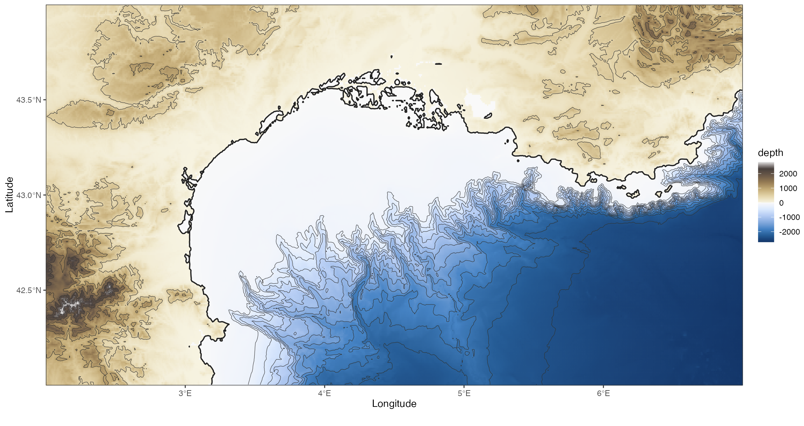

marmap2 imports, converts and plots bathymetric and topographic data in R. It is a modernisation workspace for the historical marmap package, with tidier function names, updated documentation, tibble-first workflows and newer data import tools.
library(marmap2)
library(ggplot2)
dat <- get_gebco(
lon = c(2, 7),
lat = c(42, 44),
resolution = 0.5
)
dat |>
ggplot() +
geom_bathy(expand = FALSE) +
geom_coastline() +
geom_contour(
aes(x = lon, y = lat, z = depth),
color = "grey20",
breaks = seq(0, -2500, by = -200),
linewidth = 0.2
) +
geom_contour(
aes(lon, lat, z = depth),
color = "grey20",
breaks = seq(0, 2500, by = 500),
linewidth = 0.2
) +
scale_fill_bathy(
palette_ocean = "ocean_blues",
palette_land = "land_earth"
) +
theme_bw()
Bathymetric map generated with GEBCO data and geom_bathy
NOAA ETOPO data can be imported with the same tibble-first approach:
dat_noaa <- get_noaa(
lon1 = -6, lon2 = -5,
lat1 = 49, lat2 = 50,
resolution = 1
)